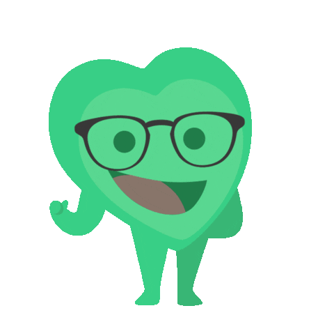

<ion-toolbar>
  <ion-buttons slot="start">
    <ion-back-button defaultHref='/tab1' style="color:black" text=""></ion-back-button>
 </ion-buttons>
</ion-toolbar>
<ion-content [fullscreen]="true">
  <ion-header collapse="condense" style="--background-color: white;">
  </ion-header> 
  <div>
      <ion-item id="inicio"  lines="none" style="--background:white; text-align: center;">
        <ion-title id="titulo">
          <ion-label>Línea de procesos</ion-label>
        </ion-title>
      </ion-item>
  </div>
  <ion-grid>
    <div>
      
    </div>
  </ion-grid>
 <!-- <ion-grid>-->
   <!-- <div class="buttons">
      <ion-item lines="none" style="padding:0px !important;" id="dos" (click)="routerClick('/fullsymptomss')">
        <ion-icon slot="end" name="chevron-forward-outline"></ion-icon>
        <label>Linea sintomatologica</label>
      </ion-item>
-->
      <ion-grid id="botones" style="margin-top: 30px;">
        <ion-card button="true" (click)="routerClick('/fullsymptomss')">
          <ion-item lines="none" style="padding:0px !important;" id="uno"> 
              <ion-icon slot="end" name="chevron-forward-outline"></ion-icon>
            <label>Línea sintomatológica</label>
          </ion-item>
        </ion-card>

        
    <ion-card  (click)="routerClick('/proceso-completo')"button="true">
      <ion-item lines="none" style="padding:0px !important;"  id="dos">
          <ion-icon slot="end" name="chevron-forward-outline"></ion-icon>
        <label>Línea perioperatoria</label>
      </ion-item>
    </ion-card>
  </ion-grid>
<!--
      <ion-item lines="none" style="padding:0px !important;" id="dos"(click)="routerClick('/proceso-completo')">
        <label>Linea de perioperatoria</label>
      </ion-item>
    </div>
  </ion-grid>
  -->
</ion-content>